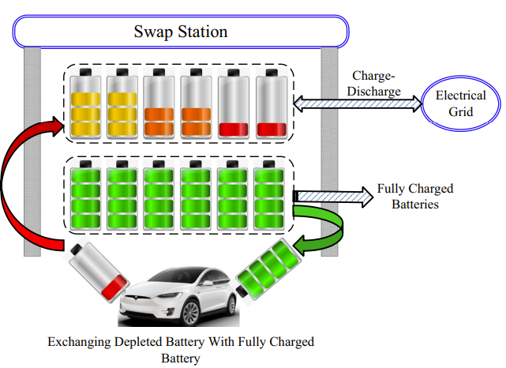
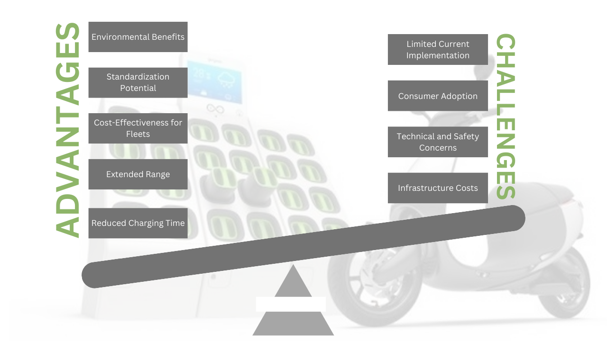
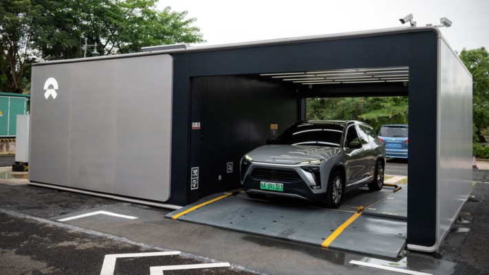
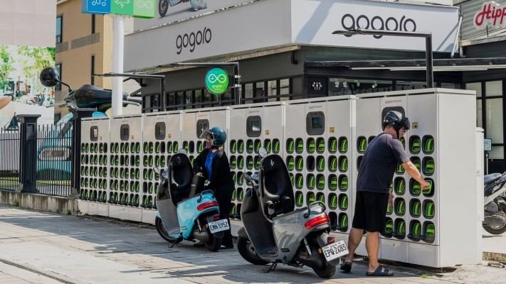
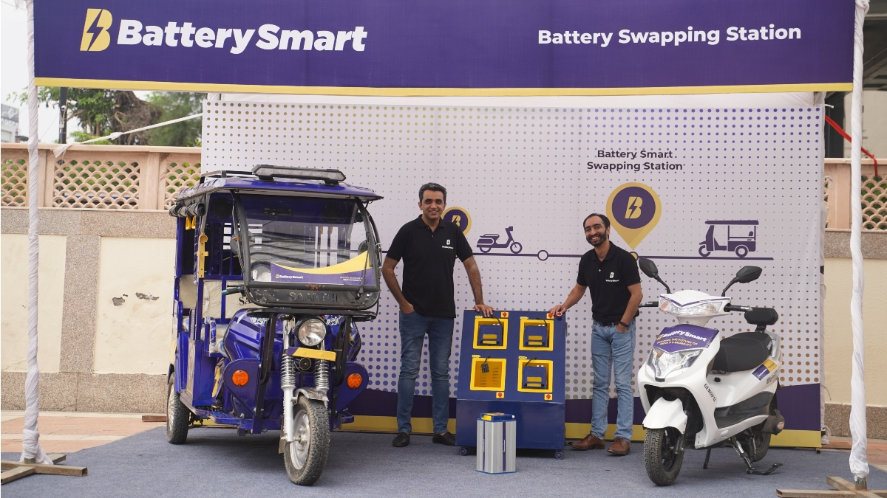
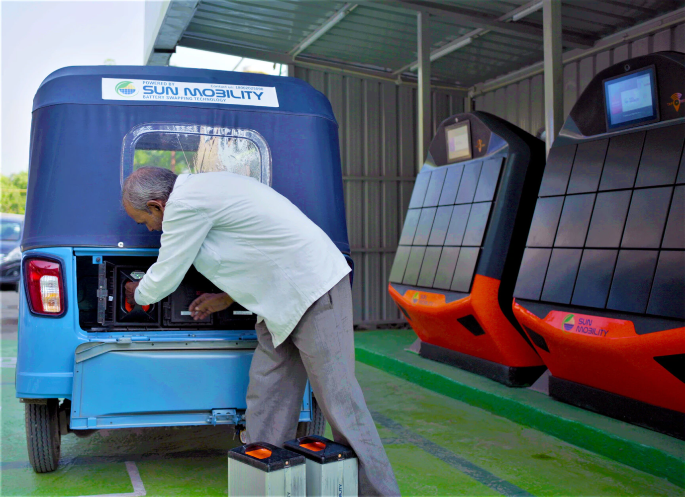
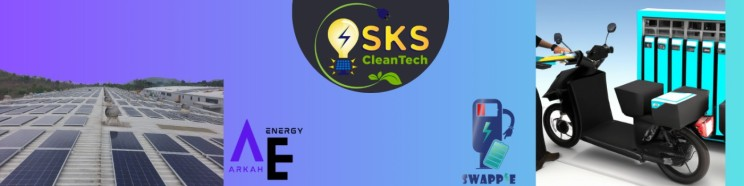

As the electric vehicle (EV) market continues to expand, battery-swapping technology is emerging as a promising solution to some of the most pressing challenges EV users face, particularly range anxiety and long charging times. This newsletter explores the advantages, challenges, and future prospects of battery swapping stations in the context of the evolving EV landscape.
Understanding Battery Swapping Technology
Battery swapping allows EV owners to exchange depleted batteries for fully charged ones at designated stations, similar to refueling a gasoline vehicle. The process typically involves driving to a battery swapping station where automated systems quickly replace the depleted battery with a fully charged unit, often taking less than five minutes. This innovation is particularly appealing to fleet operators and long-distance travelers who require quick turnaround times.

Advantages of Battery Swapping
- Reduced Charging Time: One of the most significant benefits of battery swapping is the drastic reduction in downtime. Instead of waiting hours for a charge, drivers can swap batteries in minutes, making EVs more convenient for everyday use and long-distance travel.
- Extended Range: By enabling quick battery exchanges, users can alleviate concerns about running out of charge, effectively extending the operational range of their vehicles without the anxiety associated with finding charging stations.
- Cost-Effectiveness for Fleets: For commercial vehicles, battery swapping can lead to significant cost savings by minimizing vehicle downtime and maximizing utilization rates.
- Standardization Potential: Battery swapping could pave the way for standardized battery designs across different EV models, simplifying infrastructure requirements and enhancing compatibility among various vehicles.
- Environmental Benefits: Slower charging at swapping stations can extend battery life and allow for energy use during off-peak hours, contributing positively to grid management and sustainability efforts.

Challenges Facing Battery Swapping
Despite its advantages, several challenges hinder the widespread adoption of battery swapping:
- Infrastructure Costs: The initial investment required to build and maintain battery swapping stations is substantial. Establishing a network of these stations poses a significant financial challenge for companies entering this market.
- Technical and Safety Concerns: The precision engineering required for safe battery swaps raises concerns about potential damage to batteries or vehicles during the process. Ensuring safety standards is paramount as this technology develops.
- Consumer Adoption: Consumers may be reluctant to adopt battery swapping if it is not widely available or convenient compared to traditional charging methods. Additionally, compatibility issues between different EV models could limit consumer choice.
- Limited Current Implementation: While companies like NIO have made strides in deploying battery-swapping stations (with over 1,400 in operation primarily in China), global adoption remains limited, with only a handful of models currently supporting this technology.
Case Studies
1. NIO's Battery Swapping Stations

Overview: NIO , a leading Chinese EV manufacturer, has pioneered battery-swapping technology since it opened its first station in Shenzhen in 2018. As of 2021, NIO had established over 700 battery swap stations across China, with plans for further expansion.
Operation: NIO's stations utilize a fully automated system where vehicles are placed on a platform that facilitates the quick exchange of batteries. The process takes about three minutes and can handle multiple vehicles simultaneously. Each station can perform approximately 400 swaps per day.
Impact: NIO reports that around 60% of its customers have utilized the battery swapping service, collectively achieving over 20 million swaps. This model not only enhances convenience but also supports the rapid adoption of EVs by reducing range anxiety among users.
2. Gogoro's Battery Swapping in Taiwan

Overview: Gogoro, a Taiwanese company, has successfully implemented a battery-swapping system for electric scooters. With over 2,000 battery-swapping stations across Taiwan, Gogoro has created an extensive network that supports its fleet of electric scooters.
Operation: Users can swap depleted batteries for fully charged ones at designated stations, which are strategically located throughout urban areas. The process is designed to be quick and user-friendly, allowing for seamless transitions between rides.
Impact: Gogoro's model has significantly increased the adoption of electric scooters in Taiwan, contributing to reduced urban pollution and promoting sustainable transportation options. The convenience of battery swapping has made electric scooters an attractive alternative to traditional gasoline-powered vehicles.
3. Battery Smart

Overview: Founded in 2019 by IIT Kanpur graduates Pulkit Khurana and Siddharth Sikka , Battery Smart has rapidly emerged as a leader in India's battery-swapping sector. The company focuses on two- and three-wheeler electric vehicles, addressing the critical challenges of charging time and infrastructure.
Operation: Battery Smart operates over 1,200 swapping stations across more than 35 cities in India, facilitating around 100,000 battery swaps daily. The service allows users to swap depleted batteries for fully charged ones in under two minutes, significantly reducing downtime for drivers who primarily use these vehicles for public transit and delivery services.
Impact: Since its inception, Battery Smart has completed over 45 million cumulative swaps, enhancing the economic viability of EVs by reducing upfront costs associated with battery ownership. Users can save between INR 100 and INR 150 per swap, with the added benefit of flexible subscription plans tailored to their needs. This model not only promotes EV adoption but also supports fleet operators by increasing their operational efficiency.
4. Sun Mobility

Overview: SUN Mobility is a prominent player in the Indian battery swapping market, particularly focusing on heavy electric vehicles (HEVs) such as buses and trucks. The company aims to revolutionize the transportation sector by providing modular battery-swapping solutions.
Operation: Sun Mobility has developed a modular battery swapping system that allows for quick exchanges of battery packs in less than two minutes. They currently operate 630 stations across 20 cities, catering primarily to two- and three-wheelers but expanding into larger vehicles.
Impact: By offering a cost-effective alternative to traditional diesel buses—where the upfront cost can be reduced by almost 50%, Sun Mobility is encouraging commercial operators to transition to electric vehicles. Their modular approach not only lowers operational costs but also contributes to significant reductions in emissions from the transportation sector.
5. SKS Cleantech - Swappie

Overview: SKS CleanTech has introduced the Swappie battery swapping station model in Mumbai, targeting the three-wheeler electric vehicle segment. Their innovative approach combines solar energy with grid electricity to power their operations.
Operation: Each Swappie station can accommodate around 15 batteries, serving approximately 25 three-wheeler vehicles. The capital expenditure for setting up a station ranges from INR 20-25 lakh, making it an accessible option for local entrepreneurs.
Impact: The Swappie service enables three-wheeler operators to increase their daily range from 70-80 km to over 120 km, significantly enhancing their income potential. Additionally, using solar energy reduces reliance on the grid and lowers carbon emissions by approximately 1.3-1.5 kg CO2e per kWh consumed, contributing positively to environmental sustainability.
Innovations in Battery Swapping Technology
Battery-swapping technology is rapidly evolving. Smart Battery Management Systems (BMS) are being introduced to monitor battery health, predict degradation, and manage energy flow. Moreover, the development of modular batteries—designed for compatibility across different EV models—is making it easier to scale battery-swapping infrastructure.
Conclusion
Battery swapping stations represent a compelling future for the EV industry, promising to make electric cars as convenient to refuel as gasoline vehicles. Despite challenges like standardization and infrastructure costs, battery swapping offers undeniable advantages in terms of speed, convenience, and environmental impact. If widely adopted, it could be a transformative step toward a cleaner, greener future.